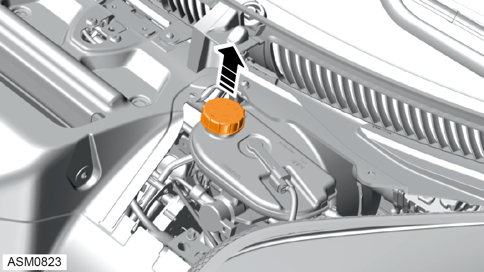
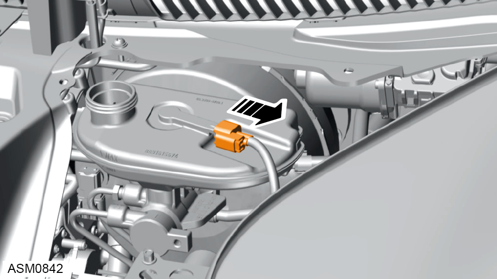
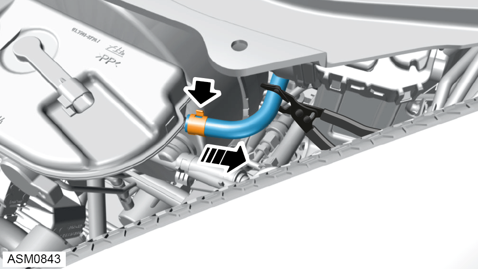
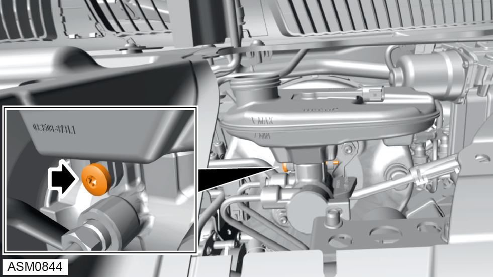
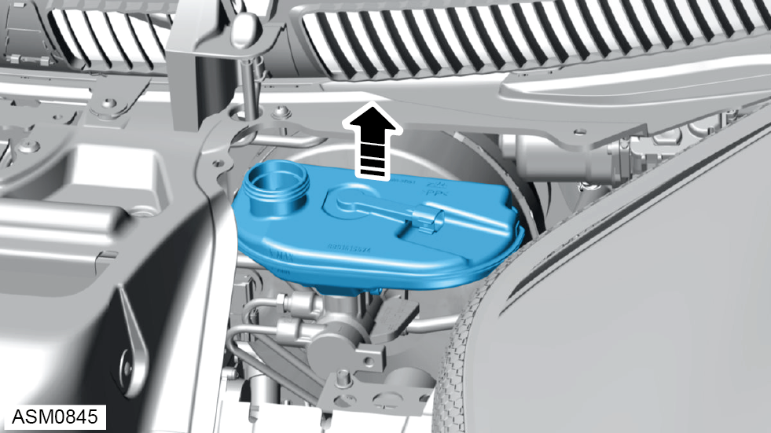

Reservoir - Master Cylinder
Print
Operation Code: 33.03.20-02
Removal
- Remove radiator duct outlet left side. Refer to procedure.

- Remove brake fluid reservoir cap.
- Drain brake fluid from reservoir.

- Disconnect harness connector from brake fluid reservoir.
- Use hose clamp on clutch master cylinder hose to minimise fluid loss.

- Disengage hose clamp and remove hose from brake fluid reservoir.

- Remove bolt securing brake fluid reservoir to brake master cylinder. Torque 4 Nm.

- Remove brake fluid reservoir.
 CAUTION: If brake fluid is spilt on the paintwork wash off immediately with clean water.
CAUTION: If brake fluid is spilt on the paintwork wash off immediately with clean water.
CAUTION: Plug pipe connections to prevent fluid loss and ingress of moisture or dirt.
Installation
- Installation is the reverse of removal procedure except for the following:
- Check and top up brake fluid level.
- Bleed brakes using Lotus Insight tool.